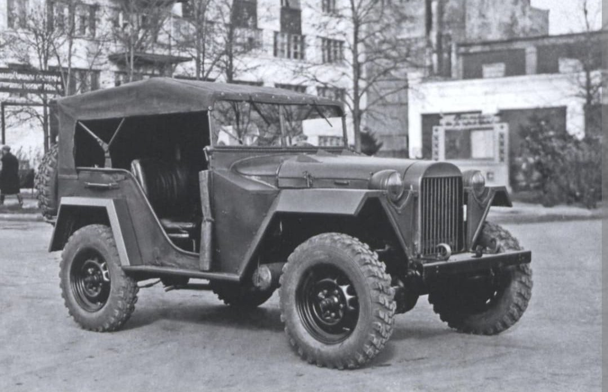
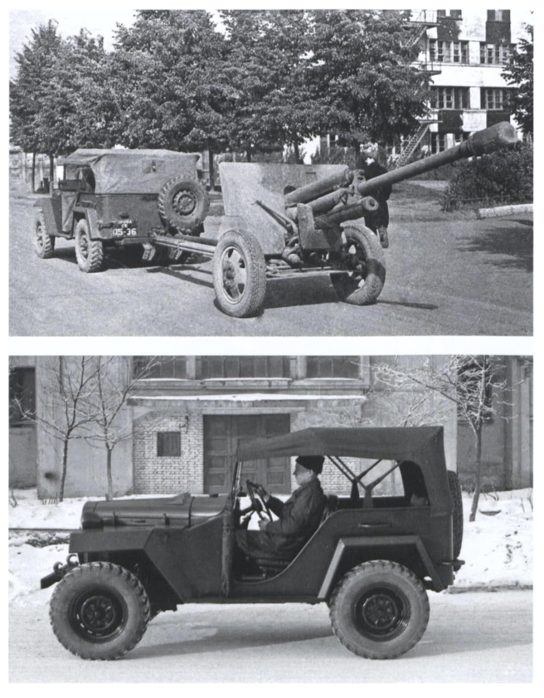
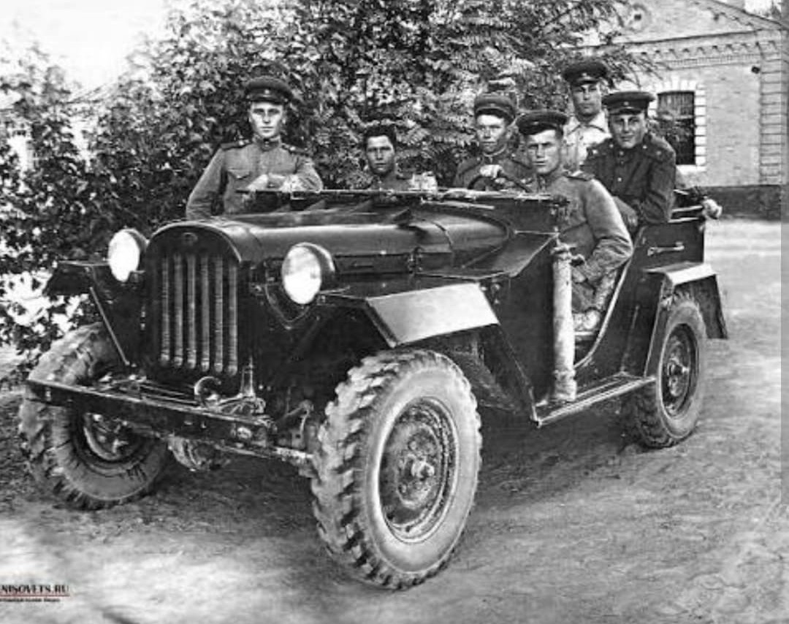

La jeep tout-terrain polyvalente de commandement, de liaison et de traction légère de l'Armée rouge

Le GAZ-67 (et sa version améliorée de série GAZ-67B) est le véhicule tout-terrain léger emblématique de l'Armée rouge durant la Seconde Guerre mondiale. Souvent considéré comme l'équivalent soviétique de la célèbre Jeep américaine, il a été conçu pour répondre aux besoins urgents de mobilité des officiers, de liaison tactique et de traction de pièces d'artillerie légères.
Malgré des volumes de production plus modestes que son homologue d'outre-Atlantique (notamment en raison des perturbations industrielles du début de la guerre), le GAZ-67 s'est imposé par sa robustesse exceptionnelle sur les terrains boueux et enneigés du Front de l'Est.
Développé par le bureau d'études de l'usine de Gorki sous la direction de Vitaliy Grachev, le GAZ-67 succède aux modèles antérieurs GAZ-61 et GAZ-64. Il reposait sur un châssis raccourci et renforcé, doté d'une voie élargie pour accroître sa stabilité en tout-terrain.
Il était propulsé par un moteur 4-cylindres à essence de 3,3 litres développant **50 chevaux** (dérivé du moteur du camion GAZ-AA). D'une masse à vide d'environ 1,3 tonne, il pouvait transporter de 4 à 5 soldats et tracter de petits canons antichars ou d'infanterie, tout en franchissant des terrains où de nombreux véhicules conventionnels s'envasaient.

Entré en service au milieu de l'année 1943 (notamment sous la variante fiabilisée GAZ-67B à partir de 1944), le véhicule fut intensément utilisé au sein des états-majors de régiments et de divisions pour le transport rapide des commandants sur les lignes de front.
Sa simplicité mécanique remarquable permettait aux équipages de le réparer rapidement sur le terrain avec des outils de base. Apprécié pour sa rusticité, il a participé à toutes les grandes offensives de fin de guerre, de la reconquête de l'Ukraine jusqu'à la chute de Berlin.

Bien que la production globale n'ait pas atteint les proportions astronomiques des jeeps américaines livrées par le programme Prêt-Bail, le GAZ-67 a démontré la capacité de l'industrie soviétique à concevoir un véhicule léger spécifiquement adapté aux conditions extrêmes des routes de l'Est.
Sa production s'est poursuivie bien après la fin de la guerre, ouvrant la voie aux générations futures de véhicules utilitaires tout-terrain de l'URSS.
Page du Musée HOP WW2 – Section Véhicules Terrestres Soviétiques